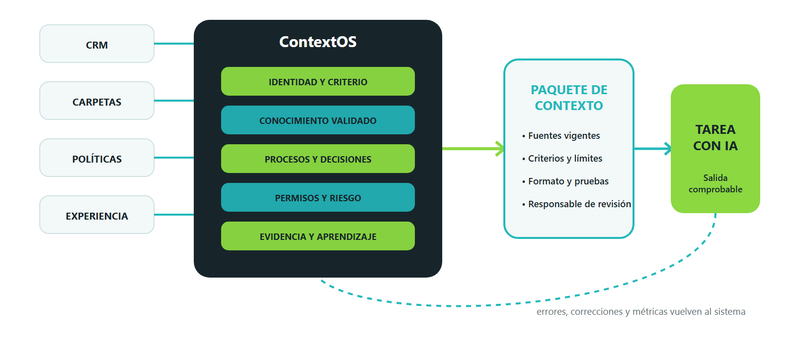

Kit operativo gratuito
De una idea de IA a una decisión defendible.
No es una colección de casillas. Es la carpeta mínima de evidencia para elegir un proceso, construir su contexto operativo y decidir en 90 días si conviene escalar, mantener limitado, rediseñar o retirar.
Tus datos no salen del navegador.
El trabajo se guarda localmente en este dispositivo. Puedes exportar cada artefacto como archivo JSON para conservarlo, moverlo o compartirlo con tu equipo, y guardarlo como PDF desde la opción de impresión.
La arquitectura del kit
ContextOS convierte conocimiento disperso en contexto operativo.
El activo no es el prompt. Es un sistema que permite cambiar de herramienta sin perder cómo decide, trabaja y aprende la empresa.
- Identidad y criterioQué importa, qué no se promete y quién aprueba.
- Conocimiento validadoFuentes vigentes con propietario, versión y ámbito.
- Procesos y decisionesPasos, reglas, excepciones y evidencia.
- Permisos y riesgoDatos permitidos, herramientas, registros y límites.
- Evidencia y aprendizajePruebas, errores, correcciones y métricas que vuelven al sistema.
